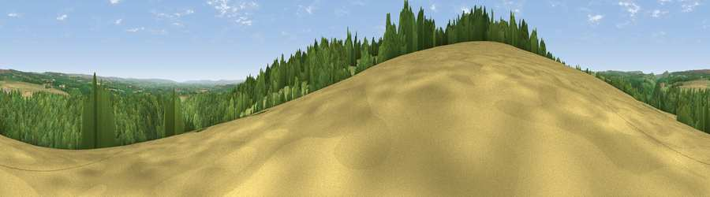

Viewpoint near Sproxton
#16246 in England · top 37% of its area beats it · near SproxtonThe view, rendered

A 360° render of this exact spot computed from the terrain model, tree cover and land cover — summer colours, afternoon light, calibrated against photographs of famous viewpoints. Real trees, hedges and buildings will differ in detail.
The panorama
Grey silhouette: terrain skyline in each direction (720 bearings, Earth curvature and refraction included). Dashed green: skyline with trees (+15 m) and buildings (+8 m) as obstacles. Blue strip: how far the ground is visible on each bearing.
Where the view opens
Wedge length = distance to the farthest visible ground on that bearing (vegetation-aware). Rings at 10, 25 and 50 km.
What fills the view
54% woodland · 32% grassland · 14% cropland
Angular shares of the visible panorama (visual magnitude), not map area. Landscape diversity 0.43 (0–1 Shannon).
Key numbers
More beautiful places nearby
The staircase of upgrades: each row has a higher view potential than everything closer. Driving times are estimates from straight-line distance, calibrated against real road routing — check an actual route before setting out.
| Place | Direction | Drive | Score |
|---|---|---|---|
| Viewpoint near Ampleforth | S · 3 km | ~7 min | 74.9 |
| Viewpoint near Ampleforth | SSE · 3 km | ~8 min | 76.6 |
| Viewpoint near Kilburn | W · 8 km | ~16 min | 79.3 |
| Viewpoint near Thirlby | W · 8 km | ~16 min | 81.5 |
| Carlton Bank | NNW · 21 km | ~36 min | 85.1 |
| Roseberry Topping | N · 30 km | ~47 min | 85.8 |
| Viewpoint near Lazenby | N · 36 km | ~55 min | 86.4 |
| Warsett Hill | NNE · 40 km | ~60 min | 86.8 |
54.23326, -1.09905 · source: screening · position refined by local search. Computed location — check access rights before visiting.